Путешествие в сердце книжных миров: от древних храмов знаний до современных оазисов чтения
В мире, где каждая страница – это портал в неизведанное, существуют места, где магия книг оживает в полной мере. Библиотеки и книжные магазины, словно зачарованные замки, хранят в себе не только истории, но и саму душу слова, воплощенную в качественной печати и переплете, которые предлагает полиграфия "Лазурь". Давайте отправимся в путешествие по этим волшебным уголкам, где время останавливается, а воображение расцветает.
Библиотеки: сокровищницы знаний и вдохновения, где каждая книга – результат работы издательства и полиграфии
Аббатство Адмонт (Австрия):

Погрузитесь в атмосферу барокко, где фрески потолка словно парят над головой, а скульптуры рассказывают древние легенды. Эта библиотека – не просто хранилище книг, но и произведение искусства, где каждый элемент декора вдохновляет на познание, а каждая книга – результат работы мастеров печати и переплета.
Интересный факт: Библиотека аббатства Адмонт известна своими уникальными фресками, созданными Бартоломео Альтомонте, которые изображают этапы человеческого познания.
Городская библиотека Штутгарта (Германия):
Этот современный храм знаний, выполненный в форме куба, поражает своей лаконичностью и функциональностью. Внутри царит атмосфера спокойствия и сосредоточенности, где каждый может найти уединение для чтения и размышлений, а так же оценить качество печати представленных книг.
Интересный факт: Архитектура библиотеки символизирует идею открытости и доступности знаний для всех.
Библиотека Binhai в Тяньцзинь (Китай):
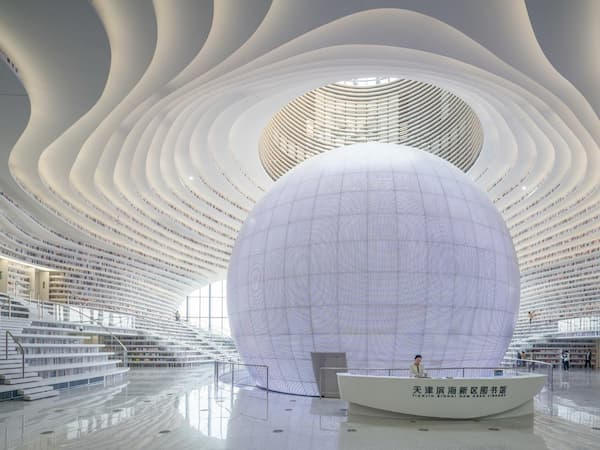
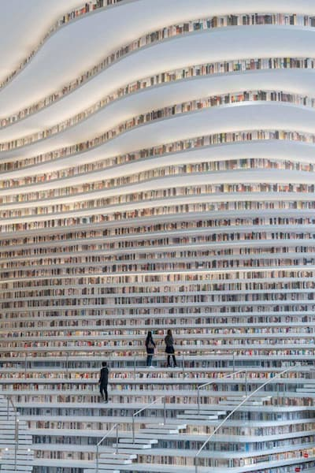
Представьте себе космический корабль, приземлившийся в центре города. Волнообразные полки, напоминающие морские волны, и гигантский сферический атриум создают ощущение бесконечного книжного пространства, где каждая книга напечатана с использованием передовых технологий полиграфии.
Интересный факт: Библиотека Binhai была спроектирована в сотрудничестве с голландской архитектурной фирмой MVRDV и стала настоящим символом современного дизайна.
Королевская библиотека дворца Мафра (Португалия):
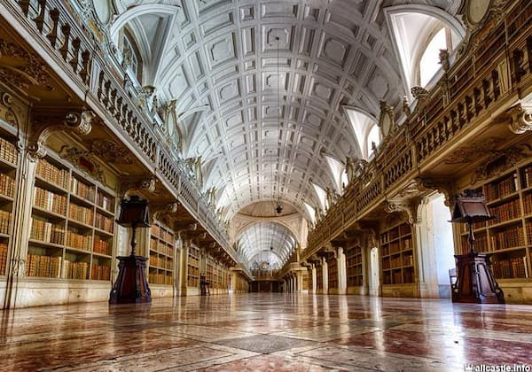
Этот роскошный лабиринт из мрамора, экзотических пород дерева и золота хранит в своих стенах не только бесценные книги, но и тайны королевской семьи. Здесь, среди старинных фолиантов, можно почувствовать дыхание истории, а так же увидеть старинные методы переплета.
Интересный факт:Библиотека Мафра известна своей коллекцией летучих мышей, которые помогают защищать книги от насекомых.
Livraria Lello (Порту, Португалия):
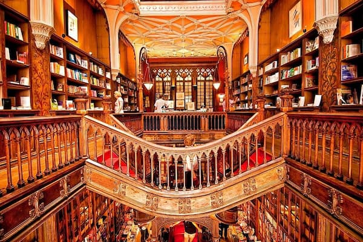
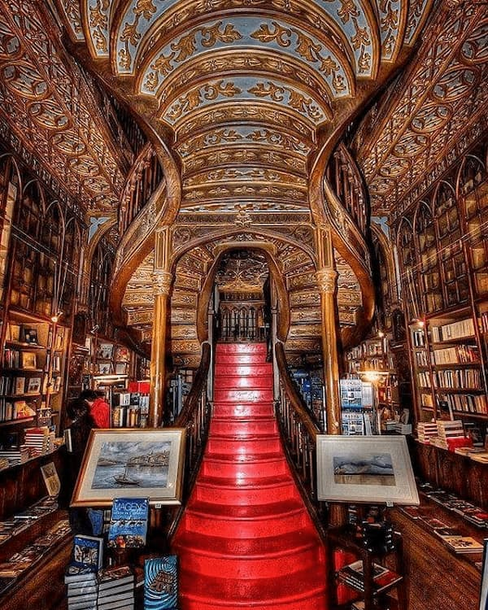
Погрузитесь в атмосферу волшебства, где витиеватые лестницы, витражи и деревянные полки создают ощущение, будто вы попали в сказку. Здесь каждая книга – это заклинание, а каждый посетитель – волшебник, а так же ценитель качественной печати.
Интересный факт: Говорят, что именно этот книжный магазин вдохновил Дж. К. Роулинг на создание Хогвартса.
El Ateneo Grand Splendid (Буэнос-Айрес, Аргентина):
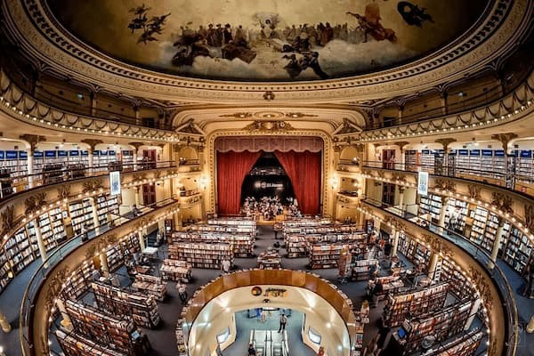
Этот бывший театр, превращенный в книжный магазин, сохранил свою величественную атмосферу. Фрески, лепнина и бархатные кресла создают ощущение, будто вы попали на спектакль, где главные герои – книги, а так же можно оценить качество работ по переплету.
Интересный факт: El Ateneo Grand Splendid считается одним из самых красивых книжных магазинов мира.
Shakespeare and Company (Париж, Франция):
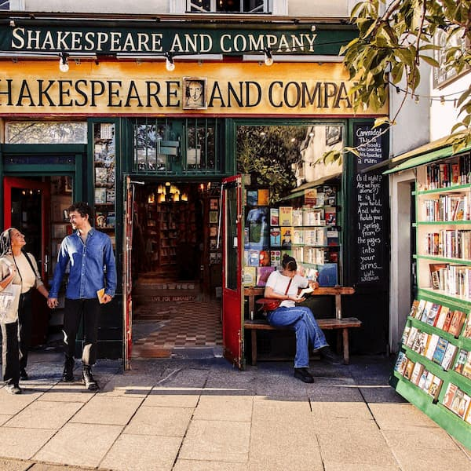
Этот легендарный книжный магазин, расположенный на левом берегу Сены, является настоящим символом литературной жизни Парижа. Здесь, среди старинных полок и уютных уголков, витает дух Хемингуэя и Джойса, а так же представлены книги различных издательств.
Интересный факт: Shakespeare and Company не только продает книги, но и предоставляет жилье для молодых писателей.
Libreria Acqua Alta (Венеция, Италия):
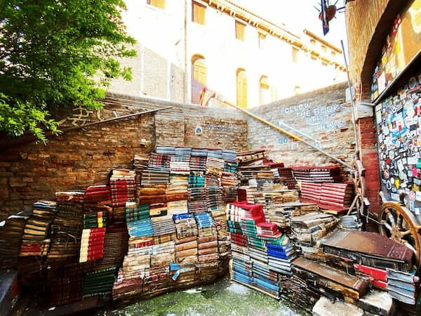
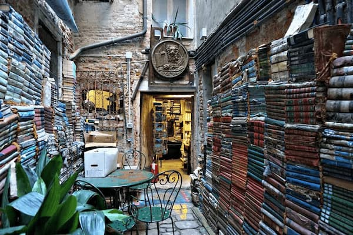
Этот необычный книжный магазин, где книги хранятся в гондолах, ваннах и других необычных емкостях, является настоящей достопримечательностью Венеции. Здесь каждая книга – это история выживания, а каждый посетитель – искатель приключений, а так же все желающие могут увидеть необычные способы хранения печатной продукции.
Интересный факт: Хозяин магазина использует гондолы и ванны для защиты книг от наводнений, которые часто случаются в Венеции.
«Подписные издания» (Санкт-Петербург, Россия):
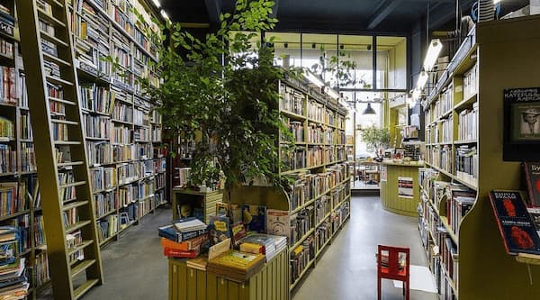
Этот современный книжный магазин, расположенный в самом сердце Санкт-Петербурга, является настоящим храмом книги. Тщательно подобранный ассортимент и уютная атмосфера создают ощущение, будто вы попали в гости к старому другу, а так же каждый может оценить современное качество печати и переплета.
Интересный факт: «Подписные издания» известен своим вниманием к деталям и любовью к книгам.
Библиотека Одорико Пилоне (Венеция, Италия):
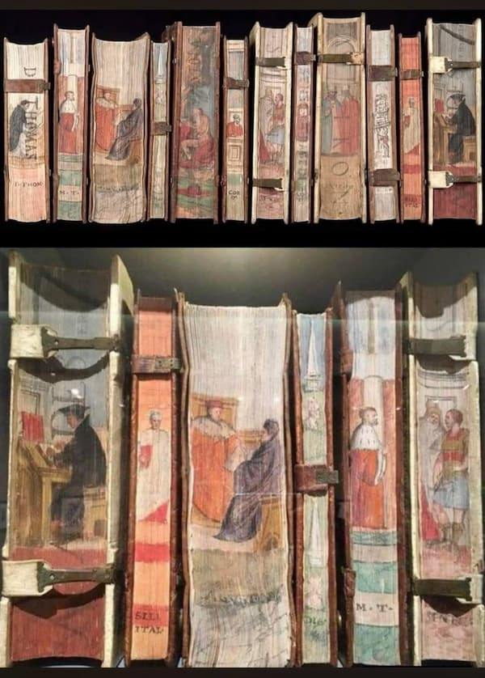
В XVI веке венецианский адвокат Одорико Пилоне владел обширной библиотекой в своём семейном поместье близ Венеции. В 1580-х годах он решил обновить коллекцию, украсив разделы страниц художественными иллюстрациями — книги тогда часто просто хранили на полках. Художником был выбран итальянский график и художник Чезаре Вечеллио (1521—1601), двоюродный брат Тициана. Всего он проиллюстрировал 172 тома. Темы иллюстраций были связаны с содержанием книг (что облегчало поиск конкретной темы). По словам Пилоне, нарисованные страницы превратили библиотеку в уникальную картинную галерею.
Эти библиотеки и книжные магазины – не просто места для хранения книг, но и врата в волшебные миры, где каждый может найти свою историю, изданную в качественной полиграфии. ИПК Лазурь: создавая магию печатного слова, от рукописи до готовой книги Как и эти волшебные места, ИПК Лазурь стремится создавать печатную продукцию, которая вдохновляет и завораживает. Мы верим, что каждая книга – это маленькое чудо, и наша задача – помочь ему родиться, используя современные технологии печати и качественные материалы для переплета.
Посетите наш сайт, чтобы узнать больше о наших услугах печати, переплета и издательства. Доверьте Лазури воплощение ваших книжных идей, и мы создадим для вас настоящую магию печатного слова.